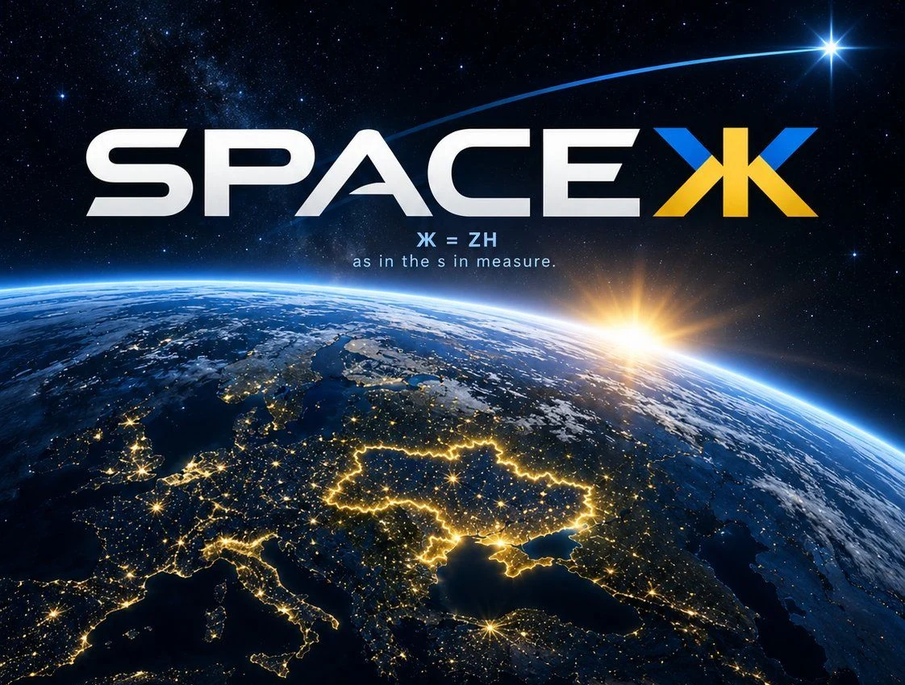

PRINCIPLE // 001
ЖИТТЯ ↗
ZHYTTIA / LIFE
Advance civilian resilience in Ukraine and beyond through responsible science, accessible knowledge, and tools people can independently verify.
OSINT and communications research in support of Ukraine.
We propose a public satellite-observation atlas and software for opt-in ground stations. The engineering plan, budget, and limitations are open for review. No live warning or broadband service exists yet.
Ж = ZH · LIFE / FREEDOM / SCIENCE // PUBLIC FOUNDING PROPOSAL · OCT 2026

Featured reporting / 16 October 2026 / Evidence brief 001
The Telegraph reports Musk proposed a restriction to Trump. Reuters independently traced an instruction to inside the White House and documented Ukrainian communications disruption. Trump denies responsibility. Read the sources and their limits.
01 / WHY WE EXIST
SpaceЖ was proposed to support the global defense of Ukraine with open, verifiable space technology.
Our initial scope is public satellite observations, ground-station interoperability, and research into resilient communications. We will work with existing open-space projects rather than claim their infrastructure as our own.
We do not operate a live detection network, targeting system, or satellite service. Every public technical claim should include its evidence, source, and limitations.
Publish the code, documentation, decisions, and financial reporting—with privacy and security safeguards.
Every claim should be independently testable; every milestone should be reviewable.
Contributors and sponsors can help build the network, not purchase control of it.
02 / FOUNDING PRINCIPLES
Life, freedom, and science are the standards we want the technology, governance, and public reporting to meet.
ZHYTTIA / LIFE
Advance civilian resilience in Ukraine and beyond through responsible science, accessible knowledge, and tools people can independently verify.
VOLYA / FREEDOM
Ukraine’s independence informs our commitment to interoperable, exportable, forkable infrastructure that no single gatekeeper can control.
NAUKA / SCIENCE
Source-linked observations, documented uncertainty, reproducible work, and corrections in public.
03 / OPEN WORKSTREAMS
Satellite observations and ground-station software first. Communications testing follows; orbital hardware requires separate funding and approvals.
A public orbital atlas for source-linked observations, predicted orbits, 3D exploration, and historical replay—with provenance and uncertainty visible.
Reproducible, privacy-conscious software for opt-in ground stations, designed to interoperate with established open projects such as SatNOGS.
An interoperable communications testbed, beginning with licensed terrestrial links, delay-tolerant messaging, and simulations.
A future hosted-payload or small-satellite feasibility track, gated by technical review, funding, licensed partners, and regulatory approval.
✳These are proposed milestones, not deployed services. Public observations do not constitute live missile detection, emergency alerts, or satellite broadband. Read the published research →
INTERFACE CONCEPT / 001
04 / A CALL TO BUILD
We need technical reviews from Ukrainian researchers, satellite-data engineers, radio operators, and civil-society experts. Choose a specific problem to review or a small deliverable you can verify.
SEE HOW TO CONTRIBUTE ILLUSTRATIVE FUNDING: $50,000 / FIRST 90 DAYS · $300,000 / YEAR ONE (INCLUDES KICKOFF).05 / THE FINE PRINT
SpaceЖ was conceived to contribute to the global defense of Ukraine. Its initial work is public satellite intelligence and lawful, resilient infrastructure for independent verification and civilian preparedness. It is not an operational targeting or early-warning service.
No. SpaceЖ is independent of SpaceX and existing constellation operators. None has endorsed or committed to this proposal.
No. There is no operational SpaceЖ broadband constellation, satellite link, launch-detection system, or emergency warning service. The experience lab is synthetic.
The website and founding proposal are public. The plan is to use OSI-approved software licenses and publish technical work as it becomes ready; individual component licenses have not all been chosen.
Parallax Web Services, Inc. is initiating this public working proposal. The preferred long-term steward is an independent nonprofit or comparable public-benefit entity; none is claimed to exist yet.
We are seeking collaborators and nonbinding expressions of support. The proposed $50,000 kickoff and $300,000 first-year figures are planning estimates, not funded commitments. GoFundYourself checkout is not live; any future campaign must publish its legal recipient, fee disclosures, and refund terms before processing contributions.